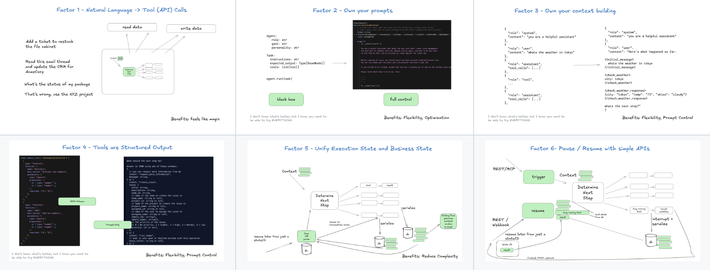
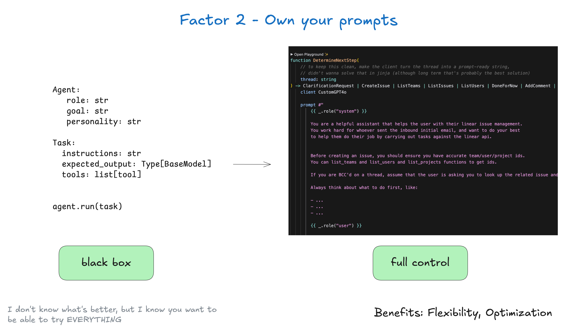
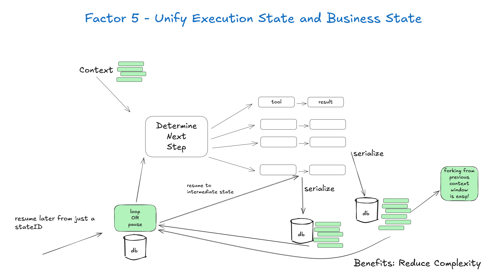
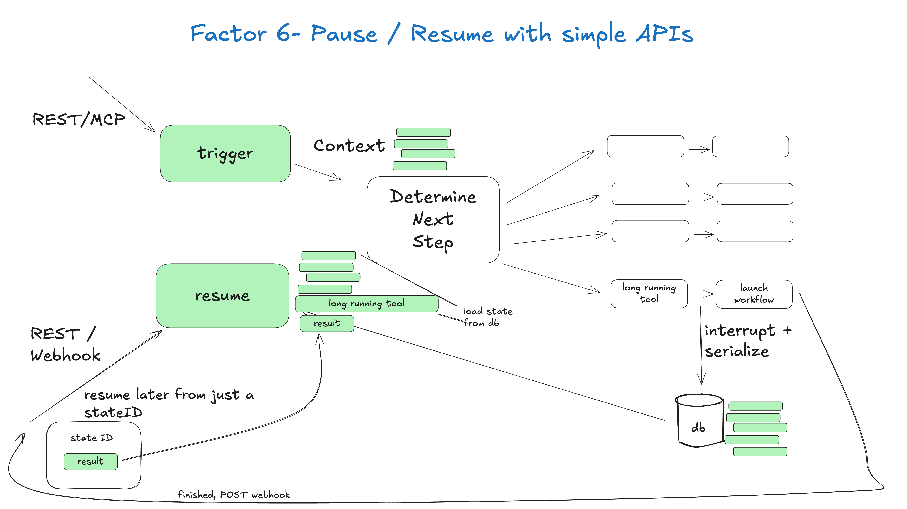
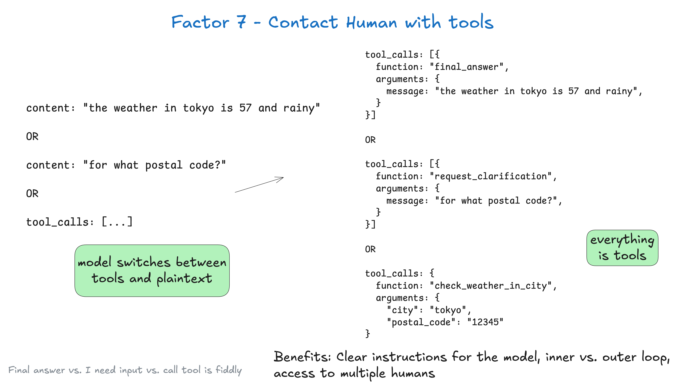
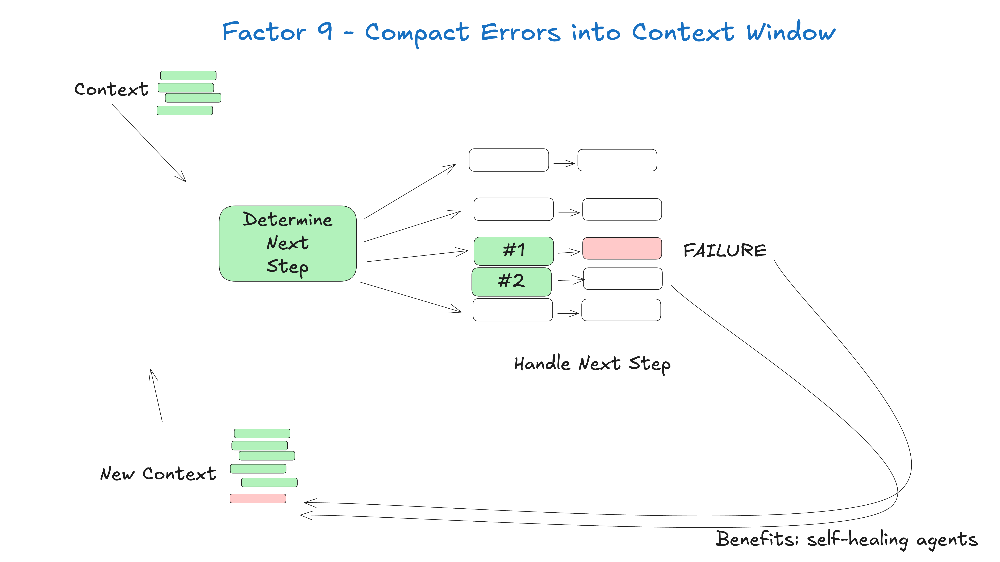
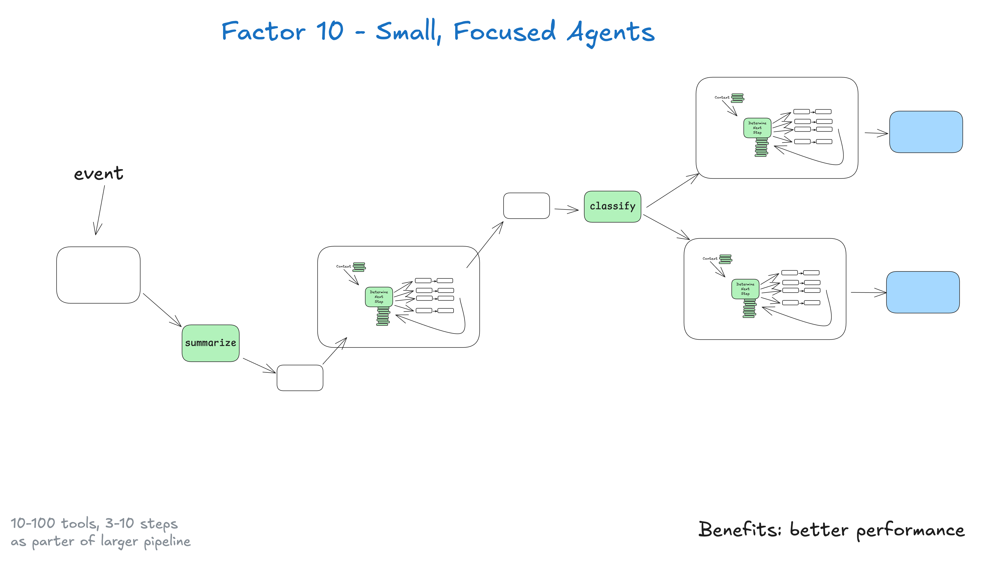
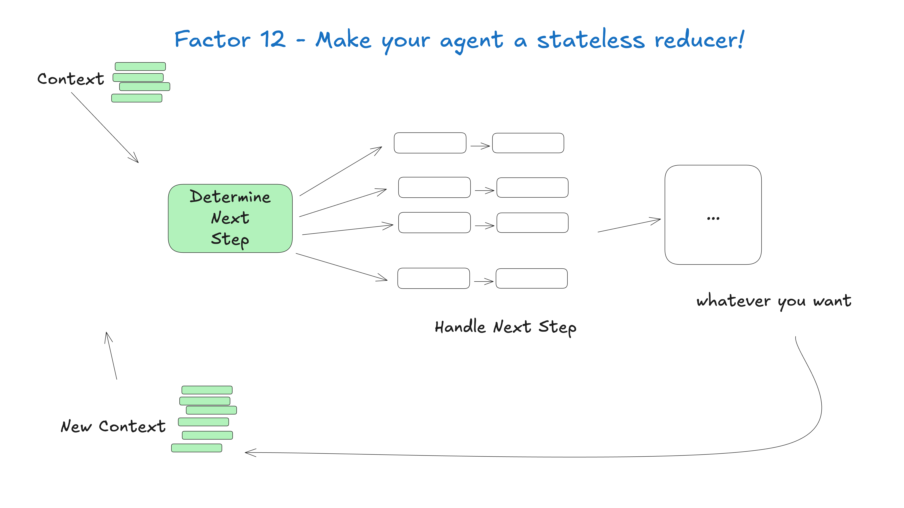
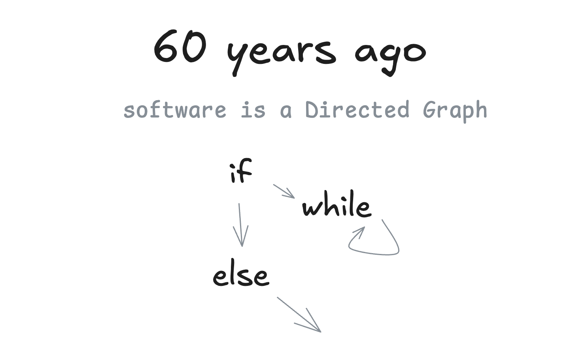
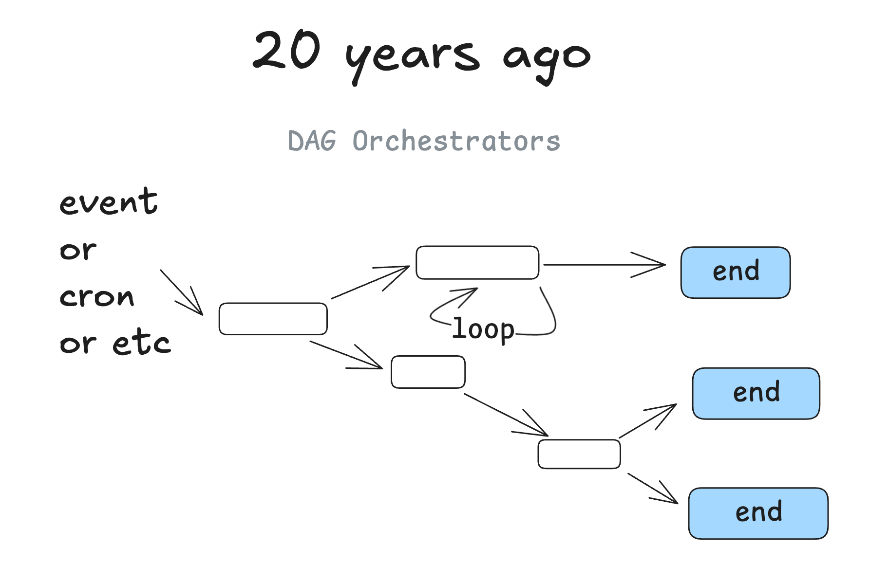

本文仿照 12 Factor Apps 的精神寫成。專案原始碼公開在 github.com/humanlayer/12-factor-agents，歡迎回饋與貢獻。一起把這件事弄懂。
錯過 AI Engineer World's Fair 了嗎？這裡有演講錄影。
在找脈絡工程（context engineering）的內容？直接跳到要素 3。
想參與
npx/uvx create-12-factor-agent？請看討論串。
市面上的代理框架我幾乎都試過，從隨插即用的 crew／langchain，到走極簡路線的 smolagents，再到號稱 production grade 的 langraph、griptape 等等。
我跟很多實力很強的創辦人聊過，有 YC 內也有 YC 外，他們都在用 AI 做很厲害的東西。多數人自己搭整套技術堆疊。真正上線、直接面對客戶的代理產品裡，我看不到多少框架的影子。
有件事讓我很意外：市面上多數自稱「AI 代理」的產品，其實沒那麼代理化（agentic）。很多主要是確定性程式碼，只在恰到好處的地方串進幾個 LLM 步驟，讓體驗變得神奇。
好的代理並不照著「這是你的提示，這是一袋工具，迴圈直到達成目標」那個模式走。它們大部分就只是軟體。
於是我開始回答這個問題：
有哪些原則，可以讓我們打造出真正夠格交到生產環境客戶手上的 LLM 軟體？
歡迎來到 12-factor agents。芝加哥歷任市長從 Daley 開始就一直在各大機場貼滿那句話：我們很高興你來了。
特別感謝 @iantbutler01、@tnm、@hellovai、@stantonk、@balanceiskey、@AdjectiveAllison、@pfbyjy、@a-churchill，以及 SF MLOps 社群，對本指南提出早期回饋。
短版：12 個要素（The Short Version: The 12 Factors）
就算 LLM 持續以指數速度變強，仍然有一些核心工程技巧，能讓 LLM 軟體更可靠、更好擴充、也更好維護。
- 我們怎麼走到這裡：軟體簡史（How We Got Here: A Brief History of Software）
- 要素 1：從自然語言到工具呼叫（Factor 1: Natural Language to Tool Calls）
- 要素 2：自己掌握提示（Factor 2: Own your prompts）
- 要素 3：自己掌握脈絡視窗（Factor 3: Own your context window）
- 要素 4：工具就只是結構化輸出（Factor 4: Tools are just structured outputs）
- 要素 5：統合執行狀態與業務狀態（Factor 5: Unify execution state and business state）
- 要素 6：用簡單的 API 啟動、暫停、恢復（Factor 6: Launch/Pause/Resume with simple APIs）
- 要素 7：用工具呼叫聯絡真人（Factor 7: Contact humans with tool calls）
- 要素 8：自己掌握控制流（Factor 8: Own your control flow）
- 要素 9：把錯誤壓縮進脈絡視窗（Factor 9: Compact Errors into Context Window）
- 要素 10：小而專注的代理（Factor 10: Small, Focused Agents）
- 要素 11：從任何地方觸發，在使用者所在之處與他碰面（Factor 11: Trigger from anywhere, meet users where they are）
- 要素 12：把代理做成無狀態的 reducer（Factor 12: Make your agent a stateless reducer）
視覺導覽（Visual Nav）

 |
 |
 |
 |
 |
 |
 |
 |
 |
 |
 |
 |
我們怎麼走到這裡（How we got here）
想深入了解我的代理歷程、以及我們如何走到這一步，請看軟體簡史。以下是速覽。
代理的承諾（The promise of agents）
接下來會一直提到有向圖（Directed Graphs，DGs），以及無環的那一類：DAG。先說一件事：軟體就是有向圖。以前我們用流程圖表示程式，不是沒道理。

從程式碼到 DAG（From code to DAGs）
大約 20 年前，DAG 編排器開始流行。經典的像 Airflow、Prefect，還有一些更早的前身，以及比較新的 dagster、inngest、windmill。它們都遵循同一套圖形模式，另外帶來可觀測性、模組化、重試、管理等好處。

代理的承諾（The promise of agents）
我不是第一個這樣講的人，但我剛開始學代理時最大的心得是：你可以把 DAG 丟掉。軟體工程師不必再逐一寫死每個步驟與邊界情況，改成給代理一個目標和一組轉移：

讓 LLM 即時做決定，自己找出路徑。

這裡的承諾是：你寫的軟體更少，只要把圖的「邊」交給 LLM，讓它自己想出節點。你能從錯誤中恢復、能少寫很多程式，還可能發現 LLM 找出新穎的解法。
代理就是迴圈（Agents as loops）
後面會看到，這招其實沒那麼管用。
再往下一層看。代理裡面有這樣一個迴圈，由 3 個步驟組成：
- LLM 決定工作流的下一步，輸出結構化 JSON（「工具呼叫」）
- 確定性程式碼執行這個工具呼叫
- 結果附加到脈絡視窗
- 重複，直到下一步判定為「完成」
initial_event = {"message": "..."}
context = [initial_event]
while True:
next_step = await llm.determine_next_step(context)
context.append(next_step)
if (next_step.intent === "done"):
return next_step.final_answer
result = await execute_step(next_step)
context.append(result)初始脈絡只有起始事件（可能是使用者訊息、可能是 cron 觸發、也可能是 webhook），我們請 LLM 選出下一步（工具），或判定已經完成。
以下是多步驟範例：

GIF 版本
{kind=link}
為什麼需要 12-factor agents？
說到底，這個做法就是沒有我們想的那麼好用。
在打造 HumanLayer 的過程中，我跟至少 100 位 SaaS 開發者聊過（大多是技術背景的創辦人），他們都想讓現有產品更代理化。歷程通常長這樣：
- 決定要做一個代理
- 產品設計、UX 規劃、想清楚要解決什麼問題
- 想快點動起來，於是抓來 $FRAMEWORK 就開始做
- 品質做到 70～80 分
- 發現 80 分對大多數面對客戶的功能來說不夠
- 發現要突破 80 分，得先逆向工程那個框架、提示、流程等等
- 打掉重練
一些免責聲明（Random Disclaimers）
免責聲明：我不確定這段話放哪裡最合適，但這裡看起來不比其他地方差：這絕對不是在暗諷市面上眾多框架，也不是在暗諷那些寫框架的聰明人。它們實現了很了不起的事，也加速了整個 AI 生態系。
希望這篇文章能帶來一個結果：讓做代理框架的人從我和其他人的歷程中學到東西，把框架做得更好。
尤其是那些想快速推進、又需要深度控制權的開發者。
免責聲明 2：我不打算談 MCP。它的位置在哪裡，你應該看得出來。
免責聲明 3：我主要用 TypeScript，理由在此，但這些東西在 Python 或任何你偏好的語言都能跑。
總之回到正題。
打造優秀 LLM 應用程式的設計模式（Design Patterns for great LLM applications）
翻過數百個 AI 函式庫、跟數十位創辦人合作之後，我的直覺是這樣：
- 有些核心的東西讓代理變得優秀
- 全力押注某個框架、然後幾乎從頭改寫成自己的版本，可能得不償失
- 確實有些核心原則能讓代理變好，用了框架大概也能拿到其中大部分
- 不過我看過最快的做法，是從代理實作裡挑出小而模組化的概念接進現有產品，讓開發者把高品質 AI 軟體交到客戶手上
- 這些模組化概念，多數熟練的軟體工程師都能定義和套用，就算沒有 AI 背景也一樣
我看過讓開發者把好 AI 軟體交到客戶手上最快的方法，是從代理實作裡挑出小而模組化的概念，接進現有產品
12 個要素（再列一次）
- 我們怎麼走到這裡：軟體簡史（How We Got Here: A Brief History of Software）
- 要素 1：從自然語言到工具呼叫（Factor 1: Natural Language to Tool Calls）
- 要素 2：自己掌握提示（Factor 2: Own your prompts）
- 要素 3：自己掌握脈絡視窗（Factor 3: Own your context window）
- 要素 4：工具就只是結構化輸出（Factor 4: Tools are just structured outputs）
- 要素 5：統合執行狀態與業務狀態（Factor 5: Unify execution state and business state）
- 要素 6：用簡單的 API 啟動、暫停、恢復（Factor 6: Launch/Pause/Resume with simple APIs）
- 要素 7：用工具呼叫聯絡真人（Factor 7: Contact humans with tool calls）
- 要素 8：自己掌握控制流（Factor 8: Own your control flow）
- 要素 9：把錯誤壓縮進脈絡視窗（Factor 9: Compact Errors into Context Window）
- 要素 10：小而專注的代理（Factor 10: Small, Focused Agents）
- 要素 11：從任何地方觸發，在使用者所在之處與他碰面（Factor 11: Trigger from anywhere, meet users where they are）
- 要素 12：把代理做成無狀態的 reducer（Factor 12: Make your agent a stateless reducer）
榮譽提名與其他建議（Honorable Mentions / other advice）
相關資源（Related Resources）
- 想貢獻這份指南，從這裡開始
- 2025 年 3 月，我在 Tool Use podcast 聊了很多這類內容
- 我也在 The Outer Loop 寫這類主題
- 我和 @hellovai 一起做「最大化 LLM 效能」的線上研討會
- 我們用這套方法在 got-agents/agents 打造開源代理
- 我們無視自己所有的建議，做了一套在 Kubernetes 上跑分散式代理的框架
- 本指南提到的其他連結：
- 12 Factor Apps
- 打造高效的代理（Anthropic）
- 提示就是函式（Prompts are Functions）
- 函式庫模式：為什麼框架是邪惡的（Library patterns: Why frameworks are evil）
- 錯誤的抽象（The Wrong Abstraction）
- Mailcrew 代理
- Mailcrew 示範影片
- Chainlit 示範
- LLM 與 TypeScript
- 結構描述對齊解析（Schema Aligned Parsing）
- 函式呼叫 vs. 結構化輸出 vs. JSON 模式
- GitHub 上的 BAML
- OpenAI JSON 與函式呼叫的比較
- 外迴圈代理（Outer Loop Agents）
- Airflow
- Prefect
- Dagster
- Inngest
- Windmill
- AI Agent Index（MIT）
- NotebookLM 談如何找出模型能力邊界
貢獻者（Contributors）
感謝每一位貢獻 12-factor agents 的人。
授權（License）
所有內容與圖片採用 CC BY-SA 4.0 授權。
程式碼採用 Apache 2.0 授權。